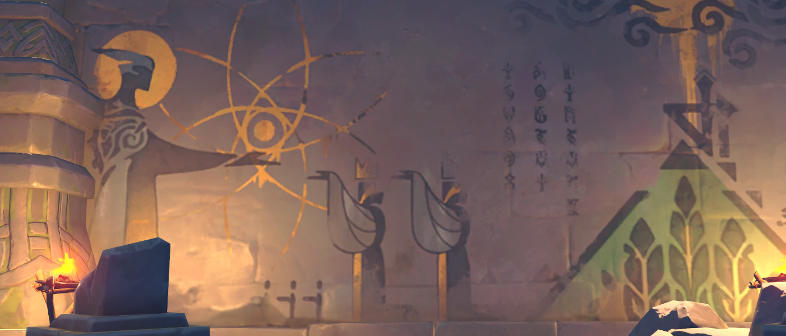
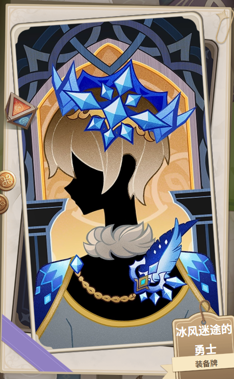

蒙德历史
由于时间原因,本页面上的内容尚未校对,可能存在大量内容与手册不一致，具体以手册为准
mea libertas meus canor
守护自由城邦千年的巨龙，
终于对自由产生了迷茫，
被自由之神命令的自由，
还能称之为自由吗？
1《原神·提瓦特篇》主线章节预告 PV-「足迹」_哔哩哔哩_bilibili
但风向是会转变的。
终有一天，
会吹向更有光亮的方向。
从今往后，
带着我的祝福，
活得更加从容一些吧。
2自在松石
一、风龙时期【待发现】
二、月宫与葬火
（一）沙尔·芬德尼尔
1忍冬之果，雪葬的星银，冰风迷途的勇士
·建立
蒙德大地被冰雪覆盖，生存条件极其恶劣。一位名叫法鲁希的男性带领族人来到了当时的雪山地区。出乎意料的是，这里并没有被风雪覆盖，而是保持着自然的苍绿葱翠，于是他们在此建立了王城沙尔·芬德尼尔。

图 人们登上芬德尼尔的山巅，向皓月献上桂冠的诗篇。
当芬德尼尔的祭司之女诞生在这棵白树之下，接受祝福时，苍翠山岳的国境中充满了欢欣。沙尔·芬德尼尔的幸福一定会永远存续，正如贯通大地、永不凋败的银白之树——为山中国度撰史的人，当时是这么想的。曾见证过无数人与事的记事者（乌库）由衷相信，公主的美貌与才德将如月光般永远皎洁…
·噩梦
公主梦见黑龙（魔龙与神树是对抗天理的关键）和神罚的噩兆
·毁灭
寒天之钉打断了地脉，杀死了白树，让此地变为雪山（所以不刷地脉花无法使用罗盘）。
·嫁接
1忍冬之果，雪葬的星银，冰风迷途的勇士
雪葬之都的女儿与嫁接无果的银枝条一同凋零。
当冻结世界的长钉蓦然降下，连这棵树也被其余波粉碎时，那位少女取走了最完整的枝，想为荫蔽一国的树接续生命。但在最后，嫁接的生命始终没能活下来。刀刃般冰冷的风雪，最终将月光遮蔽了…
当葱茏的都城为山岚所封藏，不绝的雪暴屏断清凉的月光，其间生机与每个中断的故事，皆被自青空坠下的长钉贯穿…
·伊蒙洛卡的远行
他是寒冰般沉默的战士，以身躯阻挡着自星辰而来的刺骨罡风。
「这里的第四幅壁画为你而准备，你的形象将会永远留在这面墙上。」「为了这幅壁画，为了大家，我会一直在这里等你，祈祷你的归来…」
[点击查看完整原文]
少女站在空白的墙壁前，微笑着在勇士的胸前佩上一朵小花。那是优雅而从容不迫的人儿，即使面对死亡与绝境也是同样。祭司之女将星银铸成的大剑交予异乡的勇士，风雪的啸声中，她说出的话没能传达给对方。
不满足于受保护的绘画少女，她向倾慕的人留下这最后的嘱咐：

图 5 伊蒙洛卡
「假如天性中的胆怯与绝望将你压倒，令你终于不再归来，那么…」「…请你活下去。请不要与我们共同走向灭亡，湮没于冰冷的遗忘」
[点击查看完整原文]
饮下践行的寒冷苦酒，不再直面少女润湿的双眸，踏上了无止境的追寻之途，向着雪境与深邃之地。
英雄身负雪都仅剩的渺小希望，踏上寻找救赎之旅。头戴寒冬的冠冕，高傲地消失在无垠寒风雪暴之中。背负着山城的契约，背负着清澈的目光，沧桑的勇士从来不曾恐惧冰幕外的未知。曾经一度苍翠的山间盛景、久远高天不再降下的祝福，皆是勇士永无停歇的动力。「越过冰封的门扉，走下深邃的回廊」「他折下银白枝条，为雪国带来希望」
「我相信，欢快聒噪的鸟雀会随着你的脚步，飞回重又苍翠的夏宫园林」「那些被寒潮驱逐的生灵，失去故乡的可怜孩子，将随你返归梦中的巢」
[点击查看完整原文]
身负重托的勇士在茫茫风雪中踟躇，努力辨认着飞羽的颜色。被风雪沾湿封冻的鸟羽，一如随勇士的脚步褪色的遥远嘱托。
当勇士越过冰风之墙时，时值深夜，雪暴呼啸。无论是日光或是月光都无法轻易穿透苍白之风。无论何种严寒暴雪，都无法令时间的洪流凝滞。即使都城已被掩埋在寒冰之下。即使英雄本身也随着记忆消逝。
但在最后踏雪而去的勇士终究没能及时返回。久已磨灭于风雪的憎恨言语控诉着他的逃亡…命定挥舞此剑斩开冰雪的异乡人正在远方寻求答案。皎洁如月光的她，最后的思念也没能传达给远行者。
·伊回归古国
「我已经很久没看过晴空与绿地了。不知道应该用什么样的蓝色、什么样的绿色，才能画出父亲想要的，冰雪消融的景象。」「然后，如果能再见你一面，就好了…」
[点击查看完整原文]
这就是他找到的答案——异乡的勇士终于结束了徒然的旅程，漆黑的污血从大剑的刃上点点滴落，沉重的双脚踏上已变得陌生的雪径。当疲惫的异乡人终于归往山国殿堂，为他洗尘者却仅有报死的空幽回音。
「就连这里，也没有留下值得我守护的事物了吗…」「天上的你们，只是想要看到生灵涂炭的惨状吧。」「既然如此，就以钢铁与血的歌，给你们消遣吧。」
[点击查看完整原文]
异乡人将少女交给他的，本应斩碎风雪的星银留在了壁画之间。然后下山寻找充满纷争与战斗的地方，能让他泼洒鲜血的地方。
·坎瑞亚夺钉计划
天空岛的力量，也就是天钉可以驱逐、净化深渊的腐蚀，觉得它正是能让坎瑞亚人一举获胜、得到拯救的宝物。于是坎瑞亚人就向龙脊雪山派出了一队机器人，想要夺取寒天之钉，但最终还是失败了。
（二）塞西利亚古国【待发现】
蒙德曾存在一个与古树并存的古国。古国的先人们兴建了塞西利亚花的苗圃。在今苍风高地建立了塞西莉亚苗圃，这个苗圃是种植塞西莉亚花的温室，该地也具备祭祀职能。
位于今摘星崖和千风神殿地带的文明建造了祝圣祭坛夏宫灵囿，后来夏宫灵囿深埋地底，被称为仲夏庭园。
【夏宫灵囿】传说中魔道的大能力者都会拥有的独立意识空间，针对此人的爱、恨、憧憬、嫉妒、追随、狂热之灵魂，都会存放于此。在其他小说和虚构故事里，这种空间会被叫做夏土（Summerland）。皇女的夏宫灵囿大概也是这么一个意象吧。最后没有很好的发掘这个要素，说实话很可惜。
1菲谢尔皇女夜谭
疑似天钉的东西（原文本写作晨星）降落在坠星山谷的星落湖，塞西利亚的古国在此后覆灭。
建立塞西利亚花苗圃的古国覆灭后，只剩摘星崖存在这种花的踪影
（三）大阿卡狄亚【待发现】
人们在阿卡狄亚的圣林，折取橡树林中的金枝桠。
其后裔为古恩希尔德氏族。
「我等（古恩希尔德氏族）曾流徙于如刀的朔风，忍耐裹尸布般苍冷的冤痛」「故土早已葬入银白的死寂，遗性亦已湮落失灭的荒城」
2风起之日
[点击查看完整原文]
三、3000 年前 -2600 年前 魔神战争
1醉客轶事，古恩希尔德小传，凛风奔狼系列材料
| 迭卡拉庇安 | 高塔孤王、昏君 |
| 安德留斯 | 北风王狼，疑似是「孤狼」 |
| 玻瑞亚斯 | 安德留斯的残魂 |
| 伊斯塔露 | 时间之执政、时间魔神、至上四柱之一 东面望海的高崖上，先民将时间的主人与风的主人一同祭拜。 「风带来故事，时间使之发芽」 |
| 温迪 | 它代表秘密，诞生自时间的枝杈，誊写繁荣与寂寥，见证了无所不在之神。 「我在想，如果有一天我能感动星海。那应该能唤来一场流星雨吧。啊，对了。这件风之翼就是星海的回应，是天上掉下来的，和你一样。」 「终点并不意味着一切，在抵达终点之前，用你的眼睛，多多观察这个世界吧。」 「但风向是会转变的。终有一天，会吹向更有光亮的方向。从今往后，带着我的祝福，活得更加从容一些吧。」 |
（一）安德留斯与狼族【待发现】
·狼王还未到来的时代
在那个遥远的时代，群狼的领主尚未随北风降临那片森林，为狼族带来秩序与安宁。那片森林曾是野狼自由争斗的场地，在人类所未知的树影间隐匿着它们血腥的游戏。
·狼王和狼群
相传在遥远的荒原上，有一条独狼游荡。它曾是狼王，曾经率领自己的部族寻觅家园，捕猎与战斗…那时的生涯在它的身上增添了数不尽的伤疤。它带领自己的种落越过原野，途经古老的宫阙废墟，穿越魔怪与仙灵的领地。
·孤狼
荒原是残酷的，随着狼王日渐老去，群落随之渐渐流散。年长日久，整个种群只剩下一条衰老的孤狼。传说中的荒原是没有神的土地（魔神战争以前），这里只有古老的魔神留下的鬼魂残迹，与往日仙灵空空如也的宫廷。
·孤狼去往天使曾经的宫殿，遇到最初的仙灵（见至冬）
·酒的传说
传说蒙德最初的酒，是在北风呼啸的年代酿成的。
在冰霜列王相争的年代，冰暴中飘摇的先民将野果粗酿成酒，为了躲避冻疮的痛苦，也为了增添直面冰霜的勇气。在那个时代，冰雪依然覆盖蒙德大地，蒲公英也尚未探出头来。
据说在蒙德，第一个发明酒的人是一位冒失鬼。在冰雪围困的部落中，冒失鬼为艰难耕猎的部族看管粮食。毕竟，尽管冰天雪地之中人迹罕见，但还总有些耐寒的小动物会打通隧道，从地下冒出来偷吃地窖中的粮食。因此，部族总是需要有人巡查存储粮食的洞穴、堵上鼠类打出的地洞，或把盗窃粮食的鼠辈抓个现行，为族人增加餐食。在那个时代，阴湿的洞穴总需要格外细心看护，否则堆积其中的食粮便有可能变质腐朽。但也有些时候，潜藏的小小生灵会给人们施加一点小小的恶作剧。趁着冒失鬼又一次玩忽职守，风的精灵化成狐狸模样，潜入成堆的野果之中，令酵母孳生，将之催熟发酵。而冒失鬼腹中空空，前来取食野果，正被发酵果子的醇厚口感迷醉。于是用兽皮将之榨出浆来，所以为酒。
雪原之中发明酿酒的冒失鬼也是最初的醉鬼。传说他是第一个因醉酒而迷失在梦中的人。在他最初的醉梦中，他化成了一头孤狼。
在很久以后、或者很久以前的某个时代，他与其他群落的同类拼死撕咬、与风雪中的人类竞夺食物，又与最初的仙灵相遇。群居的人与群居的狼，都是无法忍受孤独的生物。而新酿出的酒，令他们的梦互相连通。但他们对待梦的态度却截然不同。只见过风雪的人向往孤狼驰骋的荒原，而孤狼却对于人类的欲望心生恐惧。它无法理解为何人类会迷醉在危险的幻觉里，从中寻找希望。而更令狼忌惮的是，在人类的梦中，他再也无法辨清自己究竟是那头孤狼，还是一个怀有狼灵的凡人。
于是，孤狼誓言远离人类的毒物，隔绝酒的诱惑。因为狼并不是风的子民，它们的家乡并不属于酒和牧歌。因此，狼离开了人类的领地，转而在荒野与山林中的酒香罕至之地安家。
·安德留斯的统治
图 6 安德留斯
群狼是受它祝福的近卫军，就算是小狼的乳牙也有相当的潜力。曾经的众神皆背负爱人的责任。因此引导群狼，却只收养弃婴、接纳流浪者的「安德留斯」十分异类。
「安德留斯」认为人类只会带来失望，但是纯真的婴儿是无辜的。狼群选择了孩子，孩子如果也选择了狼，那么他们就结成了「卢皮卡」——命运的家族。
狼群也充分理解，人如果没有同类会感到孤独。光荣的断牙是狼们离别的赠礼，据说真的有保护平安的魔力。在遥远世界的传说里，有一只母狼领养了伟大的双子。
1编者注：此处致敬了罗马建城的传说，双子为罗慕斯与雷穆斯
狼与人所同住的「家」则被称为「狼之洞」，也就是「卢佩卡」，与这个世界的「卢皮卡」同义。
（二）冰原之地战争
在烈风的君王与北风的王狼的抗争中，蒙德的大地被如砂的风雪席卷。不堪寒苦的人们来到东部高耸的崖壁上，建立了神殿，请求神的眷护与恩惠。
安德留斯对高塔的孤王宣战，却也无法损伤王都分毫。
风的息吹永远在当时当下，时间的灼烧却不可磨灭、永不止歇、且无法抗争。风神会翻动书页。但将这篇剧本腐蚀得无法辨析的，终究还是无情的时之神。但是，两者冲刷吹拂时，常给人带来相似的感伤。或许这是后来者认为神殿祭祀的始终是风的原因。
[点击查看完整原文]
·温迪
彼时的温迪，原本是北境大地上咆哮的千风中的一缕。他当时并无魔神之格，只是风中细微的元素精灵，是一缕「能够带来细小的转机与希望之风」。
·安德留斯融入大地
认为自己讨厌人类的奔狼之王，自觉无法去描绘人类的幸福生活，因此没有资格成为尘世的风之王。于是它选择了消失。但是事实不是这样的，它看着被抛弃之人的眼神是如此温柔。
失去了生命与形体的北风王狼仍有超越凡性的伟大力量。为了迎接挑战而用冰与风复现的形体也无法容下它的全部，少数灵魂附在了在战斗中脱落的冰鳞上。
四、2600 年前 高塔孤王时代/旧蒙德
1阿莫斯之弓，风花之颂，角斗士的终幕礼，高塔孤王系列材料
（一）孤王的统治
| 「高塔孤王」 迭卡拉庇安 |
龙卷的魔神，蒙德的统治者 |
| 「无名少年」 | 吟游诗人 |
| 「风精灵」 温迪 |
千风之中的精灵 |
| 「女射手」 阿莫斯 |
阿莫斯之弓的主人，单向爱着孤王 |
| 「骑士」 古恩希尔德 |
流民首领 |
| 「红发流浪战士」 莱艮芬德 |
为孤王清理反叛者，后成为反叛者 |
·此时的蒙德
彼时叫做「蒙德」的城市被飓风团团包围，连飞鸟也不得通行。风无休止，将城中土地与岩石都磨成细腻如水的尘沙。高塔之上的风之君王，乃是「龙卷的魔神」迭卡拉庇安。他睥睨着那些在无尽的吹息中躬下身子的臣民，认为他们顺服，对此十分满意。
据说在过去的一些时期，孤王与宗室会禁止一些和弦与曲调，因为敏锐的人能从行诗人与歌手的音乐中感受到叛逆的信号，歌曲与唱诗确实也曾被用作抗争者网络的方式。
他在高塔上接受所有追随者的跪拜。但他却不知道，众人对他俯身并非出于敬仰爱戴。
但你们可曾知道，在烈风席卷的旧都当中，曾漫山遍野地开着野花。那种花儿与寻常的花朵不同。风愈猛，根茎便越强壮，繁衍也越多。当花朵遍布王城，高塔倒塌的时刻就会到来。
1角斗士的终幕礼，风花之颂，阿莫斯之弓，风起之时，高塔孤王系列材料，狼牙斗士系列材料
·女猎手被献给孤王
那是荒芜的上古时代，是翠绿的大地仍苍白如骨的过去。
昔日蒙昧的血裔向烈风俯首，将她如牲祭般献予尖塔之王。金光飘摇的杯盏中流溢着如血的果酒，水色的翡玉量抚过柔白的发辫，赤足不再掠过那些细碎似苍银的冰雪，唯有细碎似雪的苍银倾落足尖。高塔的阴影下，迷醉的囚笼间，女猎手误以为自己拥有奴隶主的宠眷，正如那流民的工匠——向她奉上纯金锻造的自鸣鸟、只乞一命的工匠，亦被她的王以凛厉的烈风斫去了双腕，好让这般玩具不再为他人拥有。
·女猎手被孤王拔擢
万民畏怖的风之主，因她（女猎手，孤王的奴隶）的弓技，拔擢她为恩宠的近侍。赤脚在白雪上行走的少女，追随乖僻的塔中君王的脚步。
正如与她的王相遇前，她从未曾理解过温存的爱与炽灼的恨，正如与她的王相遇前，行于荒原的猎手从未有过人的心。
若说有人生来便背负着善意与自由的梦想，渴望以歌声穿透绝望的风墙，若说神明亦会被囚禁于自身的妄执与傲慢，只能沉溺于名为永恒的空想，那么，亦有人生来便是缺失之物，唯有用盲目的依恋将内心的空洞补偿。
[点击查看完整原文]
「我心爱的主人啊，除您以外，无人曾让我见到温柔的梦」「无论是海浪量吻细沙，还是青翠的群森拥抱大地的葱茏」烈风从不会映出蝼蚁佝偻的苦痛，她的眼中也唯有神王孤高的身影。为那位让她明白了何为爱的恩主，理应让那些惊恐憎恶的视线熄灭。
他曾是她的所爱，但烈风从来无法理解凡骨肉胎的柔软。他曾是她的仇敌，但她的追猎绝非仅仅为了浅薄的复仇。「我梦见海浪与细沙，我梦见青翠的森林与大地」「我梦见野猪在浆果丛嬉戏，我梦见高耸的尖塔」她曾用柔软的语调向他诉说，但神王却充耳不闻。
·女猎手对孤王的爱
她爱他，但她更爱自由。她爱他，但她更爱那些在风墙下苟延残喘的同胞。她爱他，但她更爱那些被烈风碾碎的梦想。
她曾无数次在梦中见过海浪轻吻细沙，见过青翠的森林拥抱大地。但她的王，却从未让她走出过这座高塔。
·战士
红发的流浪战士，为了生存而战斗。他曾是孤王的利刃，为孤王清理反叛者。但他渐渐明白，这不是他想要的自由。
·少年
无名的吟游诗人，带着竖琴流浪。他的歌声能穿透风墙，他的梦想是让所有人都能自由地歌唱。
·古恩希尔德
流民的首领，带领族人在烈风中求生。她见证了太多苦难，她渴望改变这一切。
古恩希尔德家族是古代阿卡狄亚的后裔，他们曾流徙于如刀的朔风，忍耐裹尸布般苍冷的冤痛。故土早已葬入银白的死寂，遗性亦已湮落失灭的荒城。
·其他氏族
在烈风的统治下，还有许多其他氏族在风墙的庇护下苟延残喘。他们渴望自由，但更渴望生存。
（二）自由之战
·自由之战的前奏
在那段被烈风统治的岁月里，反抗的火种在暗处悄然点燃。最初只是零星的低语，在风墙的缝隙间传递；然后是隐秘的集会，在地下洞穴中举行。
红发的战士开始质疑孤王的统治，无名的少年用歌声唤醒人们的意识，古恩希尔德的族人开始秘密联络其他氏族。
·女猎手的加入
女猎手最终选择了反抗。她曾是孤王最忠诚的追随者，但她明白，真正的爱不是占有，而是给予自由。
她将自己的弓交给了反抗军，那是她最后的礼物。她说：「愿这弓矢能射穿风墙，愿自由之风吹拂大地。」
·战士的加入
红发的战士最终倒戈。他曾是孤王的利刃，但现在他选择为自由而战。
他说：「我曾是您的剑，但现在我选择成为他们的盾。」
·反抗的宏愿
反抗军的力量逐渐壮大。各氏族联合起来，他们不再畏惧烈风，不再屈服于高塔。
少年用歌声鼓舞士气，古恩希尔德指挥战斗，战士冲锋在前，女猎手提供支援。
·战争爆发
1角斗士的终幕礼，风花之颂
反抗军向高塔发起进攻。烈风呼啸，箭矢如雨。但反抗军的意志比风更坚定。
孤王站在高塔之上，他无法理解为何这些蝼蚁敢于反抗神明的威严。
·女猎手
女猎手在战斗中牺牲。她的最后一箭射向了高塔，但她的心中却没有仇恨，只有悲伤。
她说：「主人，我从未恨过您。我只是希望，您能理解什么是真正的自由。」
·古恩希尔德的骑士
古恩希尔德带领她的族人冲锋在前。她们是反抗军的先锋，她们是自由的使者。
·少年挡下孤王死后产生的暴风
孤王陨落了，但他死前释放的暴风足以摧毁整座城市。无名的少年站了出来，他用尽全部力量挡下了那场暴风。
他说：「让我成为最后一道风墙，让自由之风吹拂大地。」
·少年触发时之执政的权能，并死去
少年牺牲了自己，但他触发了时之执政伊斯塔露的权能。他的灵魂化作了千风中的一缕，永远守护着这片土地。
风精灵温迪继承了少年的梦想，成为了新的风神。
·特瓦林
特瓦林是风龙，它曾是孤王的眷属。在战争中，它被温迪的歌声感化，成为了新的风神眷属。
它是四风守护中的东风之龙，它守护着蒙德千年。
·温迪成为风神，获得时之执政的权能
风精灵温迪继承了少年的梦想和时之执政的权能，成为了新的风神巴巴托斯。
他发誓要让蒙德成为自由的城邦，让所有人都能自由地歌唱、自由地生活。
五、温迪时期
1风神传说，宗室系列材料，骑士团历史
（一）风神的誓言
2风神的誓言
·温迪吹散冰雪，建立新蒙德
成为风神后，温迪做的第一件事就是吹散覆盖蒙德大地的冰雪。他用神力让冰雪消融，让大地重新变得温暖。
他选择了旧蒙德废墟的东南方建立新的蒙德城。这里地势较高，可以避免洪水的侵袭；这里靠近水源，可以方便居民取水；这里风景优美，适合居住。
新蒙德城的建立标志着蒙德进入了新的时代。这是一个自由的时代，一个没有神权统治的时代。
「从今往后，蒙德将是自由的城邦。任何人都可以自由地居住在这里，自由地歌唱，自由地生活。」
[点击查看完整原文]
·特瓦林成为温迪的眷属
特瓦林是风龙，它曾是孤王迭卡拉庇安的眷属。在自由之战中，它被温迪的歌声感化，决定追随新的风神。
温迪赐予特瓦林力量，让它成为四风守护中的东风之龙。特瓦林的责任是守护蒙德城的东方，保护这片土地免受外来侵袭。
特瓦林在龙脊雪山建立了自己的巢穴，它在那里沉睡了千年，直到魔龙的污染将它唤醒。
·2600 年前的誓言
在新蒙德建立之初，温迪立下了一个誓言：他不会以神的身份统治蒙德，而是作为一个吟游诗人，用歌声和故事引导人民。
「我是风神巴巴托斯，但我不会以神的身份统治这片土地。我将作为一个吟游诗人，用歌声和故事引导人民。蒙德将是自由的城邦，人民将成为自己的主人。」
[点击查看完整原文]
这个誓言奠定了蒙德作为自由城邦的基础。从那时起，蒙德就没有了神权统治，人民自己管理自己的事务。
（二）各大家族
1骑士团历史，家族传说
在自由之战后，参与战争的各大家族成为了蒙德的核心力量。这些家族包括：
古恩希尔德家族：流民首领的后裔，他们世代担任骑士团的团长，是蒙德的核心领导力量。
莱艮芬德家族：红发战士的后裔，他们掌握了蒙德的酒业，晨曦酒庄的主人。
劳伦斯家族：曾是孤王的追随者，在自由之战后投降。他们被允许留在蒙德，但受到了严格的限制。
其他家族：还有许多其他家族在蒙德的历史中扮演了重要角色，他们共同构成了蒙德的社会结构。
（三）1000 年前 贵族专政时期
1宗室系列材料，骑士团历史
1.贵族专政
·建城一千六百年后，距今一千年前，蒙德的「自由」陷入了前所未有的恐怖低谷。
在温迪建立新蒙德约 1600 年后，蒙德陷入了贵族专政的黑暗时期。各大家族为了争夺权力，展开了激烈的斗争。
贵族们垄断了政治权力，他们压迫平民，剥削劳工。蒙德的自由精神荡然无存，人民生活在恐惧之中。
·高大的雕像
在这个时期，贵族们在蒙德城中建立了许多高大的雕像，以彰显他们的权力和威严。这些雕像成为了贵族专政的象征。
·羽球节的少女伊娜丝
在贵族专政时期，羽球节是蒙德最重要的节日。但贵族们利用这个节日来巩固自己的统治，他们强迫平民参加，以此显示自己的权威。
少女伊娜丝是羽球节的参与者之一。她目睹了贵族的暴行，决定加入反抗军，为自由而战。
·宗室套
宗室套是贵族专政时期的遗物，它见证了那个黑暗的时代。这套装备曾经是贵族的象征，但现在它提醒人们不要忘记历史。
·温迪离开
看到蒙德陷入黑暗，温迪选择了离开。他相信人民有能力自己解决问题，他不想干涉蒙德的内政。
温迪的离开让蒙德失去了神的指引，但也让人民更加独立。他们开始自己寻找出路，自己决定自己的命运。
·教会的分裂
在贵族专政时期，西风教会也发生了分裂。一部分教会成员支持贵族，另一部分则支持平民。
教会的分裂加剧了社会的动荡，但也让更多人开始思考什么是真正的信仰。
2.流浪乐团
·克留兹理德
克留兹理德是流浪乐团的创始人之一。他是一位天才音乐家，他的音乐能穿透人心，唤醒人们对自由的渴望。
·流浪乐团的建立
流浪乐团是由一群音乐家组成的组织，他们游历蒙德各地，用音乐传播自由的理念。他们的音乐能穿透风墙，能唤醒沉睡的心灵。
「音乐是自由的语言，它能穿透一切障碍，直达人心。」
[点击查看完整原文]
·流浪乐团刺杀贵族失败
流浪乐团不满足于仅仅用音乐传播理念，他们决定采取更激进的行动。他们策划了一次刺杀贵族的行动，但失败了。
这次失败让流浪乐团损失惨重，许多成员被捕或被杀。但也让更多人意识到了贵族的残暴，更多人加入了反抗军。
·莱艮芬德作为侍从骑士的经历
莱艮芬德家族的祖先曾是贵族的侍从骑士。他们目睹了贵族的暴行，内心充满了矛盾。
最终，莱艮芬德家族选择了站在人民一边，他们用自己的财富和资源支持反抗军。
·晨光的少女
晨光的少女是莱艮芬德家族的一员，她是一位勇敢的女性。她用自己的行动证明了女性也能在战斗中发挥重要作用。
·琴师爱上羽球节少女
流浪乐团的一位琴师爱上了羽球节少女伊娜丝。他们的爱情成为了那个黑暗时代的一缕阳光。
但他们的爱情也注定是悲剧的，因为伊娜丝已经决定为自由而战，她随时可能牺牲。
3.侠盗和魔女
·帕西法尔成为侠盗
帕西法尔是一位侠盗，他专门偷窃贵族的财物，然后分给穷人。他是那个黑暗时代的英雄，是人民的守护者。
·厄伯哈特的帮助
厄伯哈特是一位富有的商人，他暗中支持帕西法尔的行动。他提供资金和情报，帮助帕西法尔打击贵族。
·帕遇到魔女
帕西法尔在一次行动中遇到了一位魔女。魔女拥有强大的魔法力量，她决定帮助帕西法尔。
魔女的加入让帕西法尔的实力大增，他们的行动更加成功。
·魔女被陷害
贵族们视魔女为眼中钉，他们设计陷害魔女，指控她使用黑魔法。魔女被捕，面临死刑。
·帕的出走
帕西法尔试图营救魔女，但失败了。他心灰意冷，决定离开蒙德，去寻找新的生活。
·厄的奴隶
厄伯哈特的真实身份是贵族的奴隶，他被迫为贵族服务。他的帮助是出于无奈，而不是真心。
4.穆纳塔部族
·火神部族的流浪
穆纳塔部族是火神的追随者，他们在提瓦特大陆上流浪。最终，他们来到了蒙德，寻求庇护。
·温妮莎杀死厄伯哈特的角斗士（决斗之枪主人）
温妮莎是穆纳塔部族的勇士，她是一位强大的战士。她在角斗场上杀死了厄伯哈特的角斗士，成为了人民的英雄。
·温迪苏醒，答应帮助温妮莎推翻旧贵族
看到温妮莎的英勇，温迪从沉睡中苏醒。他决定帮助温妮莎，推翻贵族的统治。
·温妮莎击败魔龙乌萨
魔龙乌萨是贵族饲养的怪物，它被用来恐吓人民。温妮莎在温迪的帮助下击败了魔龙，成为了真正的英雄。
·背风的密约
温迪与温妮莎签订了一份密约：温迪帮助温妮莎推翻贵族，温妮莎则承诺建立一个新的、自由的蒙德。
·最终反抗
在温妮莎的领导下，反抗军向贵族发起了最后的进攻。贵族们被击败，他们的统治结束了。
温妮莎成为了新的领导者，她建立了西风骑士团，负责维护蒙德的和平与秩序。
（四）新蒙德
1.重建蒙德
·西风骑士团建立
在推翻贵族统治后，温妮莎建立了西风骑士团。骑士团的职责是维护蒙德的和平与秩序，保护人民的安全。
骑士团的成员来自各个家族，他们经过严格的训练，成为蒙德最精锐的战士。
骑士团的总部设在蒙德城的中心，那里有一座高大的钟楼，钟楼的钟声每天准时响起，提醒人们时间的流逝。
·图书馆的建立
丽莎是西风骑士团的图书管理员，她负责管理蒙德的图书馆。图书馆收藏了大量的书籍，包括历史、魔法、科学等各个领域。
图书馆是蒙德的知识中心，任何人都可以在这里借阅书籍，学习知识。
·重建神像
在新蒙德建立后，人们重建了风神神像。神像位于蒙德城的中心广场，是蒙德的地标性建筑。
神像的双手捧着风之翼，象征着自由与希望。每年，人们都会在神像前举行祭典，感谢风神的庇佑。
·温妮莎进入天空岛，风起地大树诞生
在完成了推翻贵族、建立骑士团的使命后，温妮莎被天空岛召唤，离开了蒙德。她的灵魂化作了风起地的大树，永远守护着这片土地。
风起地的大树是温妮莎的象征，它的枝叶随风摇曳，仿佛在诉说着古老的故事。
·对劳伦斯家族的流放
劳伦斯家族曾是孤王的追随者，在自由之战后投降。在贵族专政时期，他们与贵族勾结，压迫人民。
在新蒙德建立后，劳伦斯家族被流放到龙脊雪山附近。他们被要求在那里开垦荒地，自食其力。
·初代北风骑士加入骑士团
北风骑士是来自北方的战士，他们被安德留斯的精神所感召，加入了西风骑士团。
北风骑士的加入增强了骑士团的实力，他们负责守护蒙德的北方边境。
·四风守护
1四风守护传说
2四风原典四风守护是温迪设立的四个守护者，他们分别守护蒙德的四个方向：
东风之龙特瓦林：守护东方，是风神的眷属。
西风之鹰：守护西方，是骑士团的象征。
南风之狮：守护南方，是勇气的象征。
北风之狼：守护北方，是安德留斯的残魂玻瑞亚斯。
2.瑞文伍德【待发现】
1北风骑士传说
·瑞文伍德的流浪
瑞文伍德是一个神秘的部族，他们在蒙德各地流浪。他们的历史充满了谜团，没有人知道他们的真正来历。
·北风骑士来到蒙德
北风骑士是瑞文伍德的一员，他来到了蒙德，加入了西风骑士团。他的实力强大，很快就成为了骑士团的核心成员。
·北风骑士再次流浪
在完成了自己的使命后，北风骑士选择了离开蒙德，再次踏上流浪之旅。他的去向成谜，有人说他回到了北方，有人说他去了更远的地方。
3.艾伦德林和鲁斯坦
1骑士团历史
·艾伦德林和鲁斯坦的友谊
艾伦德林和鲁斯坦是西风骑士团的两位传奇骑士，他们是挚友。他们一起经历了许多战斗，建立了深厚的友谊。
·鲁爱上罗莎琳
鲁斯坦爱上了罗莎琳，一位美丽而聪明的女子。他们的爱情是骑士团中的一段佳话。
·罗莎琳求学须弥
罗莎琳为了学习更高级的魔法，前往须弥求学。她在须弥学习了五年，回来后成为了西风教会的重要成员。
六、坎瑞亚灾变
（一）杜林
1龙脊雪山传说
·莱茵多特造出杜林
莱茵多特是坎瑞亚的炼金术士，他创造了魔龙杜林。杜林是一只强大的魔龙，它拥有毁灭性的力量。
莱茵多特创造杜林的初衷是为了保护坎瑞亚，但杜林的力量超出了他的控制。